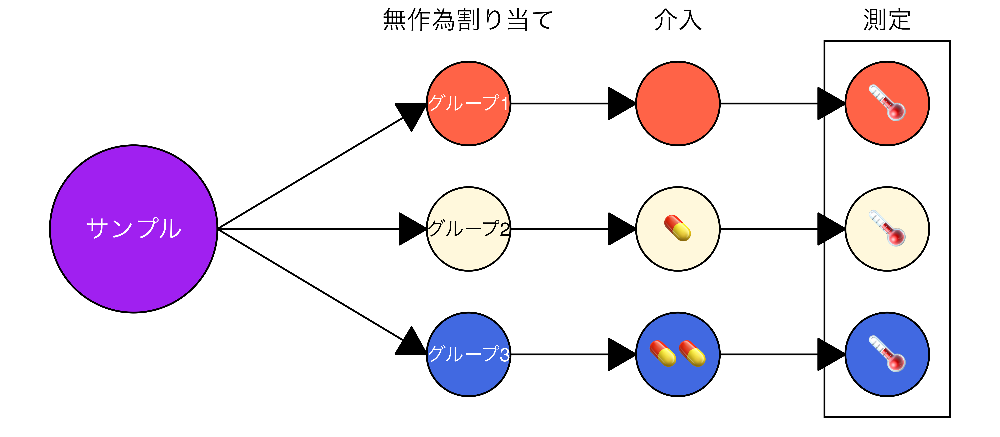
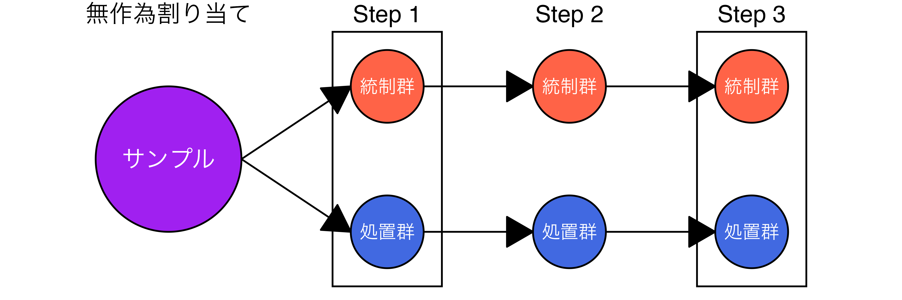

社会科学における因果推論
4/ ランダム化比較試験
宋財泫（関西大学）
1 内生性と外生性
内生性
処置変数と誤差項間に相関が存在する場合
- 処置変数は内生変数（\(\Leftrightarrow\)外生変数）
- 処置効果（因果効果）の推定値はバイアスを含む
- 内生性は因果推論の敵

内生性がない状態
内生性が存在しない場合、処置群と統制群は集団として均質
- 統制群と処置群を逆にしても問題ない（\(\Rightarrow\)統制群と処置群は交換可能）

交換可能性
交換可能性（exchangeability）：処置と潜在的結果が独立であること
- 無視可能性（ignorability）、または独立性（independence）とも呼ばれる
\[ (Y(0), Y(1)) \mathop{\perp\!\!\!\!\perp} D \]
- 処置群と統制群の潜在的結果の分布が同じであること
- 処置群と統制群が均質であるため、処置群を統制群に、統制群を処置群に交換可能
- 交換可能性が成立する場合、ATEが推定可能
平均独立性
平均独立性（mean independence）
\[ \begin{gathered} \mathbb{E}[Y(0)|D = 1] = \mathbb{E}[Y(0)|D = 0] \\ \& \\ \mathbb{E}[Y(1)|D = 1] = \mathbb{E}[Y(1)|D = 0] \end{gathered} \]
- 潜在的結果の分布でなく、期待値に関する条件：交換可能性より緩い条件
- 平均独立が成立していればATEは推定可能
- ただし、不均一処置効果（HTE）を推定する場合、平均独立だけでは不十分1（交換可能性が必要）
平均独立と交換可能性間の関係
交換可能性は平均独立を内包するより強い仮定
- ただし、平均独立が交換可能性を保証するわけではない
\[ \begin{gathered} (Y(0), Y(1)) \mathop{\perp\!\!\!\!\perp} D \\ \Downarrow \\ \mathbb{E}[Y(0)|D = 1] = \mathbb{E}[Y(0)|D = 0] \\ \& \\ \mathbb{E}[Y(1)|D = 1] = \mathbb{E}[Y(1)|D = 0] \end{gathered} \]
| ケース | 平均独立 | 交換可能性 | ATE | HTE |
|---|---|---|---|---|
| 1 | 成立 | 成立 | 識別可 | 識別可 |
| 2 | 成立 | 不成立 | 識別可 | 識別不可 |
| 3 | 不成立 | 成立 | あり得ない | あり得ない |
| 2 | 不成立 | 不成立 | 識別不可 | 識別不可 |
平均独立と交換可能性
平均独立と交換可能性が成立する例
真のATEが2の例
| \(i\) | \(D_i\) | \(Y_i(0)\) | \(Y_i(1)\) | \(Y\) |
|---|---|---|---|---|
| 1 | 0 | 3 | 5 | 3 |
| 2 | 0 | 4 | 6 | 4 |
| 3 | 0 | 5 | 7 | 5 |
| 4 | 0 | 6 | 8 | 6 |
| 5 | 0 | 7 | 9 | 7 |
| 6 | 1 | 6 | 8 | 8 |
| 7 | 1 | 4 | 6 | 6 |
| 8 | 1 | 5 | 7 | 7 |
| 9 | 1 | 7 | 9 | 9 |
| 10 | 1 | 3 | 5 | 5 |
- 平均独立：成立
- \(\mathbb{E}[Y(0)|D = 1] = \mathbb{E}[Y(0)|D = 0] = 5\)
- \(\mathbb{E}[Y(1)|D = 1] = \mathbb{E}[Y(1)|D = 0] = 7\)
- 交換可能性：成立（潜在的結果の分布が同じ）
| \(Y(0)\) | \(Y(1)\) | |
|---|---|---|
| 統制群 | [3, 7] | [5, 9] |
| 処置群 | [3, 7] | [5, 9] |
- 観察データを用いたATEの推定値：2
- 統制群と処置群が逆でもATEの推定値：2
平均独立と交換可能性が成立しない例
真のATEが2の例
| \(i\) | \(D_i\) | \(Y_i(0)\) | \(Y_i(1)\) | \(Y\) |
|---|---|---|---|---|
| 1 | 0 | 2 | 4 | 2 |
| 2 | 0 | 3 | 5 | 3 |
| 3 | 0 | 4 | 6 | 4 |
| 4 | 0 | 3 | 5 | 3 |
| 5 | 0 | 2 | 4 | 2 |
| 6 | 1 | 6 | 8 | 8 |
| 7 | 1 | 5 | 7 | 7 |
| 8 | 1 | 7 | 9 | 9 |
| 9 | 1 | 6 | 8 | 8 |
| 10 | 1 | 5 | 7 | 7 |
- 平均独立：不成立
- \(\mathbb{E}[Y(0)|D = 1] = 5.8 \neq \mathbb{E}[Y(0)|D = 0] = 2.8\)
- \(\mathbb{E}[Y(1)|D = 1] = 7.8 \neq \mathbb{E}[Y(1)|D = 0] = 4.8\)
- 交換可能性：不成立（潜在的結果の分布が異なる）
| \(Y(0)\) | \(Y(1)\) | |
|---|---|---|
| 統制群 | [2, 4] | [4, 6] |
| 処置群 | [5, 7] | [7, 9] |
- 観察データを用いたATEの推定値：5
- 統制群と処置群が逆でもATEの推定値：-1
平均独立のみ成立する例
真のATEが0の例
| \(i\) | \(D_i\) | \(Y_i(0)\) | \(Y_i(1)\) | \(Y\) |
|---|---|---|---|---|
| 1 | 0 | 2 | 10 | 2 |
| 2 | 0 | 3 | 11 | 3 |
| 3 | 0 | 4 | 12 | 4 |
| 4 | 0 | 5 | 13 | 5 |
| 5 | 0 | 6 | 14 | 6 |
| 6 | 1 | 10 | 2 | 2 |
| 7 | 1 | 11 | 3 | 3 |
| 8 | 1 | 12 | 4 | 4 |
| 9 | 1 | 13 | 5 | 5 |
| 10 | 1 | 14 | 6 | 6 |
- 平均独立：成立
- \(\mathbb{E}[Y(0)|D = 1] = \mathbb{E}[Y(0)|D = 0] = 4\)
- \(\mathbb{E}[Y(1)|D = 1] = \mathbb{E}[Y(1)|D = 0] = 12\)
- 交換可能性：不成立（潜在的結果の分布が異なる）
| \(Y(0)\) | \(Y(1)\) | |
|---|---|---|
| 統制群 | [2, 6] | [10, 14] |
| 処置群 | [10, 14] | [2, 6] |
- 観察データを用いたATEの推定値：0
- 統制群と処置群が逆ならATEの推定値：0
平均独立・交換可能性の確認
結論：平均独立・交換可能性の成立有無は確認できない（因果推論の根本問題）
- 「内生性が存在しない」ことは確認できない1
- それでも信頼できる処置効果の推定のためには内生性の確認が必要
- 解決策
既存のデータに内生性がないことを確認する（不可能）- 理論的に内生性をなくす（条件付け）
- 理論的に内生性が（ほぼ）存在しないはずのデータを見つける（自然実験・疑似実験）
- 内生性が存在しないデータを作り上げる（実験）
2 無作為割り当て
無作為割り当て（Random assignment）
- 被験者（人間や動物など）を複数のグループ（統制群や処置群など）に、コイン投げや乱数発生器などの偶然性によって割り当てる手法
- 各個体がどのグループに割り当てられるかは等しい確率
- グループが2つ（\(D\) = {0, 1}）なら…
- Pr(\(D_i\) = 1) = Pr(\(D_{j \neq i}\) = 1) & Pr(\(D_i\) = 0) = Pr(\(D_{j \neq i}\) = 0)
- グループ間の事前の差異を最小限に抑えることが可能
無作為抽出（Random sampling）との違い
- サンプリング法の一つであり、主に母集団から標本（サンプル）を抽出する際に用いられる（とされている）
- 単純無作為抽出1：母集団内の各個体が標本として選ばれる確率は等しい
- 無作為抽出された標本は母集団を代表する
- 無作為抽出された標本の分布は母集団の分布と同じ2（交換可能性が成立）
無作為割り当てと交換可能性
交換可能性が成立するので、平均独立は当然ながら成立
無作為抽出 + 無作為割り当て
無作為抽出 + 無作為割り当て：統制群と処置群と標本と母集団は交換可能
- 「処置群の結果変数 = 母集団に処置を施した場合の結果変数」として解釈可能
- 理想の話ではあり、標本が母集団を代表しない（交換不可能）ケースも多い
無作為割り当ての方法
- ベルヌーイ実験（Bernoulli randomized experiment; コイン投げ）
- 各個体は確率\(p\)で独立的に処置を受ける
- 「望ましくない」ランダム化の可能性あり（例：すべての固体が処置群になる）
- 完全ランダム化実験（completely randomized experiment）
- 予め処置群の大きさ\(n_1\)を決め（\(n_1 < n\)）、全個体の中から\(n_1\)個をランダムに選ぶ
- 「望ましくない」ランダム化の可能性あり（例：処置群の全員が女性になる）
- ブロック別（層別）ランダム化実験（block/stratified randomized experiment）
- サンプルを2つ以上のブロックに分け、ブロック内で完全無作為割り当てを行う
- ブロックが2つのみの場合、「ペアごとのランダム化実験」（paired randomized experiment）と呼ばれる
ブロッキング
- 完全ランダム化の場合、偏ったグループが出来上がる可能性がある1
- ブロッキング（blocking）：ブロック内で完全ランダム化割り当てを実施
- 例）男性と女性の中で完全ランダム化割り当てを実施
- 推定の精度が上がるため、ブロッキングできる場合、ブロッキングをした方が良い
3 ランダム化比較試験
ランダム化比較試験
ランダム化比較試験（randomized controlled trials; RCT）
- 標本（サンプル）を無作為割り当てで2つ以上のグループに分割し、各グループに異なる処置1を施し、結果変数を比較する手法
- 実験（experiment）とも呼ばれる因果推論の王道（best practice）
グループを3つに分け👦🏻👧🏻👧🏽👦🏽👦🏿👧🏿、薬を与え💊（0〜2）、体温計🌡️
実験の種類
Hyde（2015）による分類
- フィールド実験
- 実験室実験
- サーベイ実験
それぞれの実験は長所と短所を持つ
- 以下は目安であり、設計次第でいくらでも上下する
| 種類 | 内的妥当性 | 外的妥当性 | 実施コスト | コントロール性 | 対象 |
|---|---|---|---|---|---|
| 実験室実験 | 高 | 低〜中 | 低〜高 | 高 | 大学生など |
| フィールド実験 | 低〜中 | 高 | 高 | 中 | 一般市民など |
| サーベイ実験 | 中〜高 | 中 | 中〜高 | 中 | 全国・国際的 |
フィールド実験（field experiment）
実生活（学校、地域、職場、選挙など）の場面で行われる実験。
- メリット
- 外的妥当性（現実の行動に近い）
- 自然な環境で被験者が行動するため、実験効果が出にくい
- 政策介入の効果などを現場で検証できる
- デメリット
- 内的妥当性（外的要因が混入しやすい）
- 高い実施コスト（+ 許可や倫理的配慮も必要）
- 研究者による統制が限定的
フィールド実験の例
- 問い：啓発メッセージは投票参加を促すか（Gerber, Green, and Larimer 2008）
- 統制群：処置なし
- 処置群：投票参加を促すメッセージが記載されたハガキを発送
- メッセージの処置効果 = 処置群の投票率 - 統制群の投票率

実験室実験（labotary experiment）
研究者が完全にコントロールされた環境（例：大学の実験室）で行う実験
- 主に心理学・経済学などで用いられる
- メリット
- 高い内部妥当性（因果関係の識別が容易）
- 外部のノイズを排除しやすい
- 実験環境の精密なコントロールが可能
- デメリット
- 外的妥当性
- 観測者効果、ホーソン効果（被験者が「実験されている」と強く意識）
- 限定されたサンプルになりがち（主に大学生）
College sophomores may not be people（Hovland 1959）
実験室実験の例
- 問い：討議は少数派への配慮が強めるか
- Step 1：全員を対象に不公平に対する嫌悪感（inequity aversion）を測定
- Step 2：公平な配分案 vs. 多数派優遇の不公平配分案の投票
- 処置群のみグループ内のコミュニケーション（議論）を許可
- Step 3：全員を対象とした5つの配分案の投票
- 議論の処置効果 = 公平な配分案への処置群の支持 - 公平な配分案への統制群の支持
サーベイ実験（survey experiment）
アンケート内に無作為割当の処置（例：文言の違い、シナリオの提示）を埋め込み、参加者の反応を比較する実験
- インターネットを用いたアンケートに処置を埋め込むのが一般的
- メリット
- 実施コストが低く、大規模サンプルを得やすい
- インターネット調査での実施が可能（時系列や国際比較も容易）
- さまざまな認知的・態度的反応が測定可能
- デメリット
- 行動ではなく意見や認識の測定が中心（行動的な結果の妥当性に限界）
- 省力回答者（satisficer）の存在
- 処置の「強さ」が限られ、効果量が小さくなることが多い
サーベイ実験の例
- 問い：日米韓軍事同盟は日韓協力への支持を高めるか（Asaba et al. 2020）
- 統制群：米豪合同軍事演習の動画を視聴
- 処置群：日米韓同軍事演習の動画を視聴
- 動画の処置効果 = 処置群の日韓協力への支持度 - 統制群の日韓協力への支持度

4 処置効果の推定
処置効果の推定
結果変数の平均値をグループ間で比較
- ATE = \(\mathbb{E}[Y|D = 1] - \mathbb{E}[Y|D = 0]\)
- ATE = 処置群の結果変数の平均値 - 統制群の結果変数の平均値
使用可能な手法
- 平均値/比率の差の検定（\(t\)検定、\(z\)検定）
- グループが3つ以上の場合、ペアごと（pairwise）の検定を実施
- 分散分析（ANOVA、MANCOVAなど）
- 線形回帰分析
多重比較の問題（multiple comparisons problem）
- 複数回の比較から処置効果を推定する際に発生する問題
- 統制群と処置群1、処置群2がある場合、「統制群 vs. 処置群1」、「統制群 vs. 処置群2」計2回の比較が行われる
- \(p\) = 0.05を基準とした統計的有意性検定の限界
- 処置効果が0でも、処置効果があると判定される可能性は約5%
- 比較が複数回行われたら、処置効果があると判定される可能性が自然に上がる
- 2回の比較のうち、1つでも\(p\) < 0.05になったら「処置効果がある」と判定するから
| 施行 | 統制群 vs. 処置群1 | 統制群 vs. 処置群2 | 処置効果 |
|---|---|---|---|
| 1 | 0.975 | 0.878 | 留保 |
| 2 | 0.447 | 0.048 | あり |
| 3 | 0.693 | 0.729 | 留保 |
| 4 | 0.011 | 0.899 | あり |
| 5 | 0.205 | 0.988 | 留保 |
| 6 | 0.975 | 0.878 | 留保 |
多重比較の問題の補正
ボンフェローニ補正（Bonferroni correction）1の例
- 真の処置効果が0でも、計2回の比較が行われる場合、それぞれの比較において\(p\) < 0.05になる割合は5%
- 1つでも\(p\) < 0.05になったら「処置効果がある」と判定される
- 計2回の比較が行われるため、「処置効果がある」と判定される割合は10%（2倍）
- \(\Rightarrow\) 「処置効果がある」と判定される可能性は既存の\(m\)倍（\(m\)は比較回数）
- \(\Rightarrow\) 解決策：統計的有意性の閾値（\(\alpha\)）を\(m\)分の1に変更する
- 例）\(\alpha = 0.05\)、比較回数が2回の場合
- \(p\)値が0.025（= 0.05 / 2）を下回る場合、「5%水準で統計的に有意」と解釈する
- 例）\(\alpha = 0.05\)、比較回数が5回の場合
- \(p\)値が0.01（= 0.05 / 5）を下回る場合、「5%水準で統計的に有意」と解釈する
不均一な処置効果の推定
5 実装時の注意点
実験デザイン時の注意点
実験と研究倫理
SUTVA
Stable Unit Treatment Value Assumption（Rubin 1980）
個々のユニットにおける潜在的結果は、他のユニットが受ける処置によって変化しない。また、個々のユニットに対する処置水準は一定であり、異なる潜在的結果を導くような処置水準の携帯敵・内容的な変動はない。（インベンス・ルービン 2023: 11）
- 相互干渉がないこと
- にゃん！
- 処置の隠れた変動がないこと
- にゃん！
二重盲検法
バランスチェック
グループ間に平均独立が不成立しているかを確認する手法
- 統計的有意性検定（\(t\)検定、ANOVAなど）は非推奨（Imai et al. 2008）
- 平均値の差分（mean difference）1の使用を推奨
- 平均値の差分が大きい = グループ間に平均独立が不成立
- バランスの閾値は研究者が任意で決める（主に0.1）
- 傾向スコアのバランスチェックには0.25を採用する場合も（Ho et al. 2017）
- グループが3つ以上ならペアごとに（標準化した）平均値の差分を計算
- 実験データであってもバランスしていない（imbalanced）可能性がある
- バランスしていないデータでも共変量調整でバイアスの補正が可能（Lin 2013）
バランスチェックの例
{cobalt}パッケージ1を利用したバランスチェックの例
- 左の図の場合、ほとんどの共変量においてバランスが取れていない（閾値=0.1の場合）
参考書
ランダム化比較試験